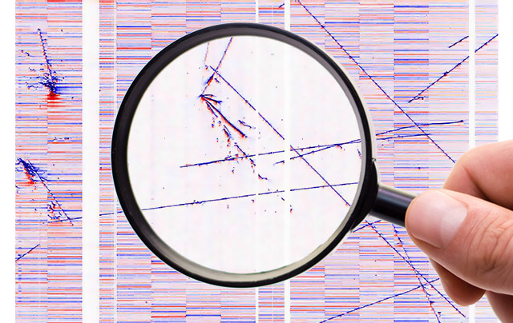

")



BNL has a long history in developing LAr detector technology, starting in 1974 with pioneering work of Radeka and Willis. Since then, the research and technical efforts have led to series of successful detectors employing LAr technology: R806, Helios, D0, and NA48, and most recently ATLAS and MicroBooNE. BNL is currently responsible for the design of the TPC and low-noise cold electronics for the major future LArTPC experiments in the U.S, such as SBN, ProtoDUNE and DUNE.
The commonly referred BNL "cold electronics" is a custom designed complementary metal-oxide-semiconductor (CMOS) analog front-end cold application-specfic integrated circuit (ASIC) operated in the LAr to amplify and shape the induced current from each wire from LArTPC. Compared to the warm electronics, the cold electronics has the advantage to be placed at the wire in order to minimize the overall capacitance. In addition, the noise level measured in equivalent noise charge is much lower for the CMOS technology at the low temperature. Due to lack of amplification of electrons inside LAr, the low noise with the cold electronics is essential to reliable extract ionization electron signal from both the collection and induction wire planes in a single-phase LArTPC. The current development of the cold electronics lies on the cold ADC and cold signal multiplexing. The integration of these capabilities in the cold LAr would minimize the signal penetrations on the 10 kt LArTPC cryostat designed for DUNE.
Presice knowledge of the liquid argon properties is essential to all LAr experiments. At BNL, we constructed a cost-effective 20-liter liquid argon test stand, which relies solely on the gas purification to achieve ultra-high-purity LAr. It is an upgrade of a previous 2-liter system with better thermal stability and an improved drift stack apparatus. This test stand is constructed to measure electron transportation properties, such as the drift velocities and the longitudinal/transverse diffusion in LAr. It is also used to study the purity model in LAr, which is critical for the operation of a large LArTPC.
BNL is developing a broad suite of software related to LArTPC. The suite includes excess noise filtering, signal processing, electrostatic field response calculations (2D and 3D), and accurate simulations covering electron drift and diffusion and detector and electronics response.
Whether data is simulated or from the real detectors, BNL is developing a novel tomographic 3D LArTPC activity imaging softaware called Wire Cell. The principle of Wire-Cell strictly follows the principle of LArTPC, that is, the same amount of ionization electrons are observed by all the wire-planes. Using both time and charge information, 3D image of the event topologies are firstly obtained. Further reconstruction steps including the clustering, tracking, and particle identifications (PID) are then directly applied to the 3D image.
The high level of complex information produced by LArTPC field calculations, simulations and reconstruction requires equally sophisticated visualization software. BNL develops interactive web-based, interactive visualization software including the immersive Bee 3D event display showing simulated "true" or Wire Cell reconstructed activity as well as the Magnify application which provides 2D views (wire vs time) of the data and the ability to explore innndividual waveforms in detail. The field calculations can produce data for viewing in the 3D ParaView application.
The goal of the TPC signal processing is to convert the raw digitized TPC waveform to the number of ionized electrons passing through the wire plane at a given time. The proper recovery of the number of ionized electrons from both induction and collection anode wire planes is important to the success of the subsequent reconstruction algorithms. Owing to the ultra-low noise with the cold electronics inside LAr, we successfully extract the ionization from the induction wire planes with the 2D deconvolution as well as the Region of Interest (ROI) selection techniques in the MicroBooNE experiment.
Even modest sized LArTPC detectors such as the single-phase protoDUNE detector to be operated at CERN in 2018 can produce prodigious amount of data (2.5 PB over two months of running). It is important to reduce the data to manageable size while retaining all important signal information. BNL is developing a data reduction technique which can save all signal information while reducing the data volume by more than a factor of 400.
The BNL group are currently participlating various major LArTPC experiments including MicroBooNE, SBN, and DUNE.
The MicroBooNE detector is a recently built LArTPC designed to observe interactions of neutrinos from the on-axis Booster and off-axis NuMI beams at the Fermi National Accelerator Laboratory in Batavia, IL. The physics motivation of MicroBooNE includes studing the nature of low-energy excess observed by MiniBooNE, studying the neutrino-Argon interaction cross section at 800 MeV range, and development of the LArTPC technology. The detector consists of a 2.56 m x 2.3 m x 10.4 m TPC for charge detection, and an array of 32 PMTs that detect scintillation light for triggering, timing, and other purposes. The active mass of the detector is 86 t of LAr. The TPC is housed in a foam-insulated evacuable cryostat vessel with a 2.56m drift distance bounded on one end by the cathode plane and the other by three parallel anode wire readout planes. In the drift direction, these planes are labeled “U”, “V”, and “Y”. The U and V planes each contain 2400 wires and the Y plane contains 3256. Wires are spaced apart by 3 mm both within and between planes. The wires making up the Y plane run vertically and the wires in the V and U planes are oriented 60° with respect to vertical.
The Short-Baseline Near Detector (SBND) will be one of three liquid argon neutrino detectors sitting in the Booster Neutrino Beam (BNB) at Fermilab as part of the Short-Baseline Neutrino Program. MicroBooNE and the ICARUS-T600 are the intermediate and far detectors in the program, respectively. SBND is a 112 ton active volume liquid argon time projection chamber (LArTPC) to be located only 110 m from the BNB neutrino source. The detector is currently in the design phase and is anticipated to begin operation in 2018. SBND will record over a million neutrino interactions per year. By providing such a high statistics measurement of the un-oscillated content of the booster neutrino beam, SBND is a critical element in performing searches for neutrino oscillations at the Fermilab Short-Baseline Program. The large data sample will also allow studies of neutrino-argon interactions in the GeV energy range with unprecedented precision. The physics of these interactions is an important element of the long-baseline Deep Underground Neutrino Experiment (DUNE).
The Deep Underground Neutrino Experiment (DUNE) is the first mega science program to be hosted in the US. DUNE is designed to precisely measure the parameter govern the muon (anti)neutrino to electron (anti)neutrino oscillations, which includes the CP violating phase, the neutrino mass hierarchy, and other neutrino mixing parameters, by placing four 10 kt LArTPC detectors at a baseline of 1300 km. It will also search for proton decays, and detect neutrinos from supernova explosions. DUNE is in the process of finalizing and validating the LArTPC design through the construction of a set of prototype detectors (35-ton single phase detector, 1 m x 1 m x 3 m dual phase detector, protoDUNE single phase LArTPC, and protoDUNE dual phase LArTPC).
The BNL group consists of scientists and engineers from the Electronics Detector Group, the Instrumentation Division, and the Omega group.